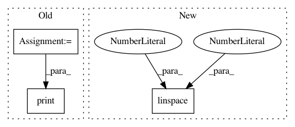

655b588bd9dff86993b4f5a24c44c81f2465b022,examples/images_contours_and_fields/watermark_image.py,,,#,14
Before Change
np.random.seed(19680801)
datafile = cbook.get_sample_data("logo2.png", asfileobj=False)
print("loading %s" % datafile)
im = image.imread(datafile)
im[:, :, -1] = 0.5 // set the alpha channel
fig, ax = plt.subplots()
After Change
fig, ax = plt.subplots()
ax.plot(np.sin(10 * np.linspace(0, 1)), "-o", ms=20, alpha=0.7, mfc="orange")
ax.grid()
fig.figimage(im, 10, 10, zorder=3, alpha=.5)
In pattern: SUPERPATTERN
Frequency: 4
Non-data size: 3
Instances
Project Name: matplotlib/matplotlib
Commit Name: 655b588bd9dff86993b4f5a24c44c81f2465b022
Time: 2019-03-08
Author: jklymak@gmail.com
File Name: examples/images_contours_and_fields/watermark_image.py
Class Name:
Method Name:
Project Name: CamDavidsonPilon/lifelines
Commit Name: 543abb1664f1d684c9dda7edca77380982420204
Time: 2020-08-04
Author: cam.davidson.pilon@gmail.com
File Name: perf_tests/cp_perf_test.py
Class Name:
Method Name:
Project Name: IndicoDataSolutions/finetune
Commit Name: 2f1f4adb504fd6a91027a091a4e5e911a4d7c905
Time: 2018-08-03
Author: benlt@hotmail.co.uk
File Name: finetune/datasets/mcdonalds_yelp_sentiment.py
Class Name:
Method Name:
Project Name: matplotlib/matplotlib
Commit Name: 754cfba75452535c201f9ac13aed091e6932cd84
Time: 2019-03-07
Author: anntzer.lee@gmail.com
File Name: examples/images_contours_and_fields/watermark_image.py
Class Name:
Method Name: